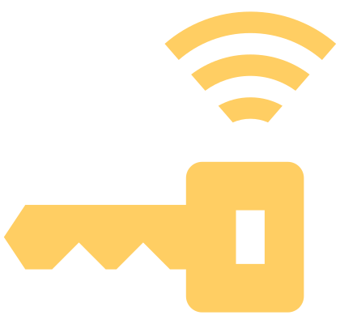

Le verrouillage sans clé ne fonctionne pas
Verrouiller ou déverrouiller le véhicule à l’aide du bouton sur la clé.
ou :
Déverrouiller ou verrouiller le véhicule par contact de l’appareil mobile sur le capteur NFC.
ou :
Déverrouiller ou verrouiller le véhicule au moyen du portefeuille numérique (Wallet).
Essayer ensuite de déverrouiller ou de verrouiller le véhicule en utilisant les capteurs sur la poignée.
Si le verrouillage sans clé ne fonctionne toujours pas, faire appel à un atelier spécialisé.

Si le véhicule n’est pas déverrouillé pendant une période prolongée, cette fonction peut être désactivée automatiquement en raison de la protection contre la décharge de la batterie 12 V. La fonction n'est disponible que sur la poignée de porte conducteur.
Le contact est mis mais aucune clé n’a été trouvée

allumé
Message indiquant qu’aucune clé n’a été trouvée dans le véhicule.
Solutions possibles pour la clé physique :
Placer la clé dans l’habitacle.
Si la clé se trouve dans le rangement doté de la fonction Phone box où un téléphone est en cours de recharge, la clé doit être retirée de cet emplacement.
Solutions possibles pour la clé numérique :
Placer l’appareil mobile dans l’habitacle.
Placer l’appareil mobile dans le rangement doté de la fonction Phone box.